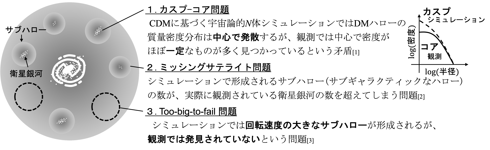
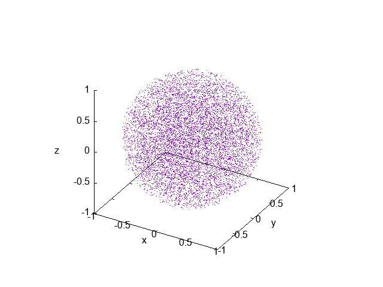

1933年にZwicky博士がかみのけ座銀河団内の銀河の運動から、「目に見えない質量」の存在を指摘しました。未知の物質は「ダークマター(DM)」と名付けられ、その正体は現代科学最大の謎の一つです。コールドダークマター(CDM)がその有力候補であり、CDM理論に基づくボトムアップ型(小さなスケールの構造が先に生まれ、それらが合体してより大きな構造を作るとする)の階層的構造形成モデルは、「古い銀河が見つかっている」、「銀河団などの大きな構造は比較的新しく形成されている」、等の観測事実と符合します。
一方で1990年代になると、銀河・矮小銀河等の小スケールで観測との間に、以下のような極めて深刻なパラドックスが指摘されました。

このような矛盾がどのようにして起こるのか、より詳しく調べるために、我々は宇宙論的N体シミュレーションを用いて、DMがその質量のほとんどを占める「矮小銀河」の形成・進化について研究しています。
N個の粒子の重力相互作用を数値的に計算するシミュレーションのことを「N体シミュレーション」と呼びます。例えば、10000体の粒子に全ポテンシャルエネルギーの1/4の運動エネルギーを与え、自由落下時間の10倍まで計算した結果は以下のように可視化できます。
